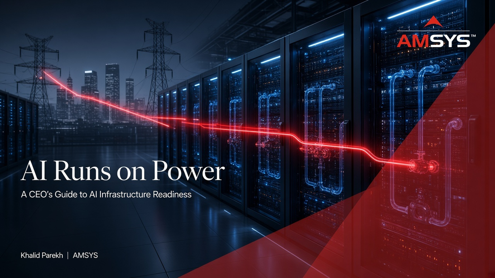

By Khalid “KP” Parekh | Founder, Chairman & CEO, AMSYS Group
Most AI conversations in the boardroom start with models. Which one, which vendor, which use case. Very few start with the question that increasingly decides whether any of it ships: where will this run, and is there enough power to run it?
That question used to belong to the facilities team. It now belongs to the CEO.
AI infrastructure readiness is an organization's ability to supply the power, cooling, connectivity and security its AI workloads need, at a cost the business case can carry. Get it right and AI scales on schedule. Get it wrong and the strategy waits in line for capacity nobody planned for.
I've written about why most enterprise AI strategies fail and how to govern the AI agents now running inside companies. This piece is about the layer underneath both.
The Constraint Has Moved From Chips to Power
For two years, the headline shortage was GPUs. The quieter shortage is electricity.
U.S. data centers used about 4.4% of the country's electricity in 2023, according to Lawrence Berkeley National Laboratory's report for the Department of Energy. By 2028, that share could reach 6.7% to 12%. Globally, the International Energy Agency projects data center electricity use will more than double by 2030, to around 945 terawatt hours. That is slightly more than all of Japan uses today, and AI is the main driver.
Gartner puts a sharper point on it. It predicts 40% of existing AI data centers will be operationally constrained by power availability by 2027, and expects rising power costs to flow through to the price of AI services.
So what: the AI roadmap you approved this year assumes capacity that someone, somewhere, still has to build and power.
Why This Is a CEO Problem, Not a Facilities Problem
AI hardware is a different animal. A single NVIDIA GB200 NVL72 rack draws roughly 120 kilowatts and is liquid cooled. The typical data center rack is nowhere close. Uptime Institute's 2025 Global Data Center Survey put the average typical rack density at just under 9 kW.
That gap is not a tuning problem. Most enterprise server rooms, and many older colocation halls, were never designed for it. Uptime also found that only about a third of operators run any AI training or inference today, while far more plan to. A lot of companies are going to find the gap the hard way.
The constraint is not only technical. The 2026 State of AI Infrastructure Report, published by data center provider Flexential, surveyed more than 350 enterprise IT leaders. In it, 89% said reliable grid power influences their AI deployment decisions, and 55% ranked power cost as the top factor in where AI workloads go. The share expecting measurable AI returns within a year fell from 51% to 36%.
When power shapes location, cost, timeline and ROI, it is a strategy decision. That puts it on the CEO's desk.
Five Questions That Define AI Infrastructure Readiness
Bring these to your next leadership meeting. If the answers are vague, you've found your starting point.
- What will our AI workloads actually require? Training a model, fine-tuning one and running inference for internal tools are very different loads. Most companies overestimate some needs and badly underestimate others.
- Where will each workload run, and why? Public cloud, colocation or on-premises should be a deliberate choice based on cost, data sensitivity, latency and available capacity, not a default.
- Can our facilities, or our providers' facilities, handle the density? Ask about power per rack, liquid cooling readiness and real delivery dates for new capacity.
- What will power cost over the life of the investment? Price volatility belongs in the business case, and long-term service contracts with clear power terms are worth negotiating now.
- Are the data and the network close enough to the compute? Flexential found 96% of respondents had at least one network-related performance issue affecting AI workloads in the past year. Compute that sits far from your data is compute you pay to wait on.
Key takeaway: readiness is not one number. It's the match between what each workload needs and where it can realistically run.
Where Your AI Runs Is a Business Decision
Placement used to be decided once, during a cloud migration, and rarely revisited. AI changes that.
Sensitive data may need to stay in environments you control. High-volume inference that runs every day may cost less on dedicated infrastructure than on metered cloud capacity. Short experiments and burst training usually belong in the cloud. The right answer is almost always a mix, and the mix should be reviewed as costs and capacity shift.
What matters is that someone owns the decision. In too many companies, placement is decided by whichever team moves first, and the bill shows up later. It's the same pattern I described in The Executive's Playbook for Building an AI Strategy That Actually Delivers: strategy without ownership turns into a collection of experiments.
So what: treat workload placement like capital allocation, because that's what it is.
Efficiency Is a Strategy, Not a Compromise
The easiest power to secure is the power you don't need.
Gartner's own advice is to use the minimum compute that does the job and to look at options like edge computing and smaller language models. That's sound business guidance, not just good engineering. A smaller model built for a specific task can be cheaper to run, faster to respond and easier to govern than a general model asked to do everything.
Efficiency also lives in the basics: retiring idle servers, consolidating underused environments and measuring utilization before buying more hardware. None of it is glamorous. All of it frees capacity for the AI work that matters.
Infrastructure Security Belongs in the Same Conversation
New AI infrastructure is new attack surface. GPU clusters, model files and the data pipelines feeding them need the same discipline as any critical system: tight access, segmentation, monitoring and a recovery plan that has actually been tested.
The power and cooling systems behind them are increasingly connected and managed remotely too. If a cooling failure can take your AI capacity offline, it belongs in your resilience plan and your cybersecurity review.
So what: an AI environment that is fast but fragile is not ready.
What Houston Already Knows
AMSYS was founded in Houston in 2003, in a city where energy has always been a strategic conversation. Houston understands something the technology world is now learning: businesses that plan for energy early grow on their own timeline. The ones that don't end up waiting.
AI is putting technology and energy in the same planning meeting. Leaders who are comfortable in both rooms will have the advantage, which is also why diversified enterprises that share capabilities across technology and infrastructure are well placed for what comes next.
What to Do in the Next 90 Days
- Name an owner. One executive accountable for AI infrastructure across IT, facilities and finance.
- Inventory the demand. List current and planned AI workloads with their compute, data and latency needs.
- Map the supply. Document what your facilities and providers can deliver in power, density and timing.
- Put power in the business case. Model electricity cost and price volatility for every major AI investment.
- Right-size before you scale. Test whether smaller models or smarter placement can meet the need first.
- Add infrastructure to the risk register. Include power, cooling and AI clusters in resilience and security reviews.
The Bottom Line
AI strategy and infrastructure strategy are now the same strategy. The companies that scale AI over the next few years won't just be the ones with the best models. They'll be the ones that secured the power, space and security to run them, and planned for it before everyone else did.
Ask your team where your AI will run in 2028 and what it will take to power it. If nobody can answer, that's the most important AI project on your list.
About the Author
Khalid “KP” Parekh is the Founder, Chairman, and CEO of AMSYS Group, a Houston-founded enterprise with capabilities spanning technology, infrastructure, energy, and specialized talent, and a Founding Member of the NVIDIA Global Enterprise AI Partner Advisory Board. Read more on Khalid Parekh's official website or visit the AMSYS leadership page.
Sources: LBNL / U.S. DOE, Dec 2024 · IEA, Energy and AI, Apr 2025 · Gartner, Nov 2024 · NVIDIA DGX GB200 User Guide · Uptime Institute, Jul 2025 · Flexential, 2026 State of AI Infrastructure Report